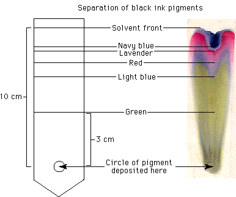

Paper chromatography is a technique used to separate a mixture into its component molecules. The molecules migrate, or move up the paper, at different rates because of differences in solubility, molecular mass, and hydrogen bonding with the paper.
For a simple, beautiful example of this technique, draw a large circle in the center of a piece of filter paper with a black water-soluble, felt-tip pen. Fold the paper into a cone and place the tip in a container of water. In just a few minutes you will have tie-dyed filter paper!

The green, blue, red, and lavender colors that came from the black ink should help you to understand that what appears to be a single color may in fact be a material composed of many different pigments —and such is the case with chloroplasts.
Study this figure; you will return to it later.
 Continue to Design of the Experiment I.
Continue to Design of the Experiment I.